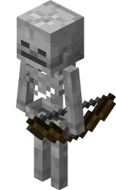

Скелет
Скелеты — очень быстрые противники, которые выпускают стрелы в игрока на приличной скорости. Как и зомби, скелеты спаунятся только в тёмных областях, например, в неосвещённых областях на поверхности ночью или в неосвещённых пещерах. Если солнце будет под углом в 15 градусов или больше к поверхности, или же скелета заспаунить в измерении Край, то скелет загорится и будет получать повреждения от огня до смерти.
Скелеты могут стрелять через воду без потери скорости и точности. Поэтому чрезвычайно трудно убить скелета в воде, лучше бороться с ними на суше. Скелеты могут попадать в других мобов своими стрелами; если они поразят паука, пещерного паука или другого скелета, то это заставит их игнорировать игрока и начать бороться с обидчиком, пока один из них не умрёт (или оба сразу, но взаимное убийство скелетов случается крайне редко). Не получают урон от взрывного зелья урона, но получают его от взрывного зелья лечения, так же как и зомби. Кроме того, стрелы скелета обладают особым свойством — их невозможно собрать.
Скелеты также могут спауниться сидящими на пауках. Начиная с обновления Halloween update, скелеты теперь держат лук в руках.
Зомби
Зомби собираются группами по 1-3 особей. Если зомби увидит игрока или деревенского жителя, то он начинает его преследовать, не пытаясь обойти препятствия. Когда зомби натыкается на препятствие, он начинает прыгать, но не может его преодолеть, что является несколько странным поведением. Зомби не предпринимают попыток остаться вне воды. С версии 1.2 зомби могут обходить некоторые препятствия и проходить через небольшие лабиринты, а также умеют ломать деревянные двери (на уровне сложности Hard). Процесс разрушения двери показывается трещинами на ней, как если бы дверь ломал игрок. Зомби будут пытаться сломать верхнюю половину двери, и если снаружи здания поверхность на 1 блок ниже двери, зомби начнут прыгать и не смогут разрушить дверь.
Паук
Паук (англ.Spider) — второй враждебный моб, добавленный в игру. Глаза пауков слегка светятся и видны в темноте. В отличие от Зомби, Крипера и Скелета, паук имеет размер 2х2х1, а не 1х1х2, что позволяет ему пролезать в проходы высотой 1 куб, но он не пролезает в проходы шириной 1 куб.
Пауки не сгорают с наступлением дня, но становятся пассивными. Паук, преследовавший игрока в темноте, продолжит преследовать его и после рассвета. Пассивный паук никогда первым не атакует игрока, но если вдруг у вас в доме очень темно и туда запрыгнет паук, то он станет агрессивным и нападет. Если вы попытаетесь укрыться от него на стене, то знайте - паук умеет забираться по стенам.
Эндермен
Странник Края выглядит как высокий чёрный гуманоид с длинными руками, длинными ногами и коротким туловищем. Глаза странника Края фиолетового цвета. Вокруг моба летают фиолетовые частицы, подобные тем, которые летают возле портала в Нижний Мир. Странник Края примечателен тем, что у него подвижна не нижняя, а верхняя челюсть, которая соединена с нижней челюстью только двумя выдвигающимися суставами.